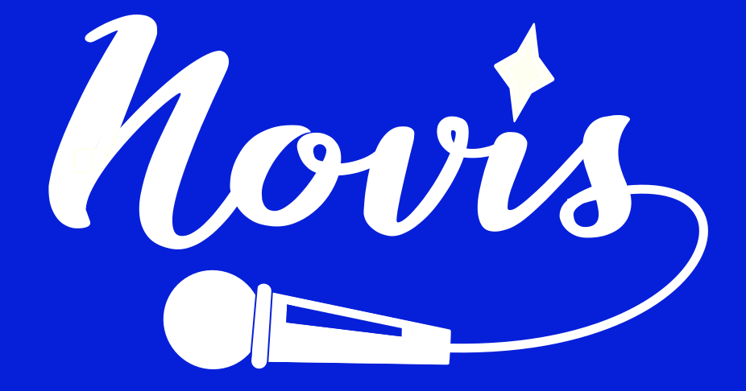

---
# This page is built from _config.yml (settings and switches) and
# _data/roster/<semester>.yml (the member list). Edit those files instead.
---
{%- capture semester_name -%}{% if site.semester contains "f" %}Fall{% else %}Spring{% endif %} 20{{ site.semester | slice: 1, 2 }}{%- endcapture -%}
<!DOCTYPE html>
<html lang="en">
    <head>
        <title>Novis</title>
        <link href="https://fonts.googleapis.com/css?family=Muli|Roboto" rel="stylesheet">
        <script src="https://ajax.googleapis.com/ajax/libs/jquery/3.0.0/jquery.min.js"></script>
        <link type="text/css" rel="stylesheet" href="styles.css"/>
        <link rel="shortcut icon" href="favicon.ico">
    </head>
    <body>
        <div id="centerpiece">
            <nav>
                <a href='index.html'>
                    
                </a>
                <div id='navoptions'>
                    <p>
                        {% if site.show_about %}<a class='navlink' href="#about">About</a>{% endif %}
                        {% if site.show_content %}<a class='navlink' href="#content">Content</a>{% endif %}
                        {% if site.show_members %}<a class='navlink' href="#members">Members</a>{% endif %}
                        {% if site.show_auditions %}<a class='navlink' href="#audition">Audition</a>{% endif %}
                    </p>
                </div>
            </nav>
            <div id="splashcontainer"><div id="splash">
                <h1>This is Novis.</h1>
                <h2>We're the premier A Cappella group at the University of Texas at Dallas.</h2>
            </div></div>
        </div>

        {%- comment -%}
          Valentunes box and announcement bar. Turn them on/off in _config.yml
          (show_valentunes, show_banner). No need to edit this file.
        {%- endcomment %}
        {%- if site.show_valentunes %}
        <div class="container alternate">
            <div id="alert_valentunes">
                <h1>Valentunes!</h1>
                <p>We will perform popular love songs for you ~ serenade your Valentine, friend, RA, favorite staff member, research PI, situationship, worst enemy! Just fill out this form :)</p>
                <a href="{{ site.valentunes_form }}">CLICK HERE TO ORDER A VALENTUNES</a>
                <p>In-person Valentunes only available on University of Texas at Dallas campus.</p>
            </div>
        </div>
        {%- endif %}
        {%- if site.show_banner %}
        <div id="alert">
            <h2>{{ site.banner_text }}</h2>
        </div>
        {%- endif %}
        {%- if site.show_about %}
        <a id="about"></a>
        <div class="container">
            <h1>About</h1>
            <div class="accentdivider"></div>
            <p>Novis A Cappella has been delighting UTD audiences with unaccompanied vocal performances for over a decade. Established in 2009, the group focuses on both musical excellence and cultivating friendships among its members. A typical semester in Novis begins with learning big-group pieces. Short performances and small-group music practice come next, then preparation for our major concert, which typically takes place at Jonsson Performance Hall.</p>
        </div>
        {%- endif %}

        <a id="social"></a>
        <a id="audition"></a>
        <div class="container alternate">
            {%- comment -%}
              This outer div is intentionally never closed (the page layout depends on it).
              The switches below only hide what is inside it.
            {%- endcomment %}
            {%- if site.show_auditions %}
            <h1>Audition</h1>
            <div class="accentdivider"></div>
            {%- if site.auditions_open %}
            <p>Novis is always looking for new members! Auditions are currently open for {{ semester_name }}! All voice parts and beatboxers are welcome. You'll be asked to do a little sight-reading, sing some harmony with Novis officers, and perform a quick (less than one minute long) solo excerpt. We'll also check your vocal range.</p>
            {%- if site.audition_signup != "" %}
            <p><a href="{{ site.audition_signup }}">Click here to sign up for an audition time slot!</a></p>
            {%- endif %}
            {%- else %}
            <p> Novis is always looking for new members! Unfortunately, auditions are currently closed for {{ semester_name }}! Interested in joining Novis in the future? Fill out the interest form below! Want to know when our concerts are, or join the community? Check out our Instagram!   </p>
            <iframe src="{{ site.interest_form }}" width="640" height="788" frameborder="0" marginheight="0" marginwidth="0">Loading…</iframe>
            <p> Form not working? Try pasting the following link into your browser: {{ site.interest_form }}</p>
            {%- endif %}
            {%- endif %}
            <div class="container alternate"></div>
        {%- if site.show_members %}
        <a id="members"></a>
        <div class="container">
            <h1>Members</h1>
            <div class="accentdivider"></div>
{%- comment -%}
  The member list comes from _data/roster/<semester>.yml. Edit that file, not this one.
{%- endcomment %}
{%- assign roster = site.data.roster[site.semester] -%}
{%- unless roster %}{% include ERROR-no-roster-file-for-this-semester-see-README.html %}{% endunless -%}
{%- for vp in roster.voice_parts %}
            <h2>{{ vp.part }}</h2>
            <table>
                <tr>
{%- for m in vp.singers %}
{%- unless m.photo %}{% include ERROR-a-member-is-missing-a-photo-see-README.html %}{% endunless -%}
{%- assign role_no = "" -%}
{%- for r in roster.officer_roles %}{% if r == m.role %}{% assign role_no = forloop.index %}{% endif %}{% endfor -%}
{%- if m.role and role_no == "" %}{% include ERROR-officer-role-does-not-match-officer_roles-see-README.html %}{% endif %}
                    <td>
                        
                        <p>{{ m.name }}{% if role_no != "" %}<sup>{{ role_no }}</sup>{% endif %}</p>
                    </td>
{%- endfor %}
                </tr>
            </table>
{%- endfor %}
            <table>
                <tr>
                    <td>
                        <h2>Officer Roles</h2>
                        <p style="text-align: left;">
{%- for r in roster.officer_roles %}
                            {{ forloop.index }}. {{ r }}<br/>
{%- endfor %}
                        </p>
                    </td>
                </tr>
            </table>
        </div>
        {%- endif %}
        {%- if site.show_content %}
        <a id="content"></a>
        <div class="container alternate">
            <h1>Content</h1>
            <div class="accentdivider"></div>
            <p>Past performances and more are free to view on our YouTube channel. The program for our latest concert is available <a href="{{ site.program_link }}">here</a>.<br/>We're also on social media - follow us for exclusive content, sneak peeks at our music, more about our members, and updates about auditions, performances, and more! DM us on Instagram, or contact us at "{{ site.contact_email }}"!</p>
            <div class="socials">
                <a href="https://www.youtube.com/user/NovisUTD/featured"></a>
                <a href="https://www.facebook.com/novisutd/"></a>
                <a href="https://www.instagram.com/novisutd/"></a>
                <a href="https://www.reddit.com/user/novisutd/"></a>
                <a href="https://www.tiktok.com/@novisutd"></a>
            </div>
        </div>
        {%- endif %}

        <p id="copyright">Copyright {{ site.time | date: '%Y' }}, Novis A Cappella. Novis A Cappella is a registered student organization. Its works are not official publications of UT Dallas and do not represent the views of the university or its officers. The University of Texas at Dallas is an Equal Opportunity/Affirmative Action University. Students with disabilities needing special assistance to attend please call (972-883-2946). Texas Relay Operation: 1-800-RELAYTX.</p>
        <script src="dynamic.js"></script>
    </body>
</html>
